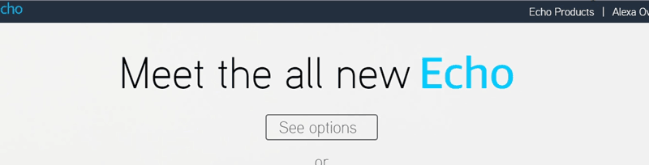
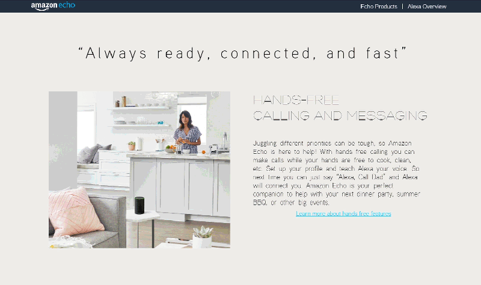
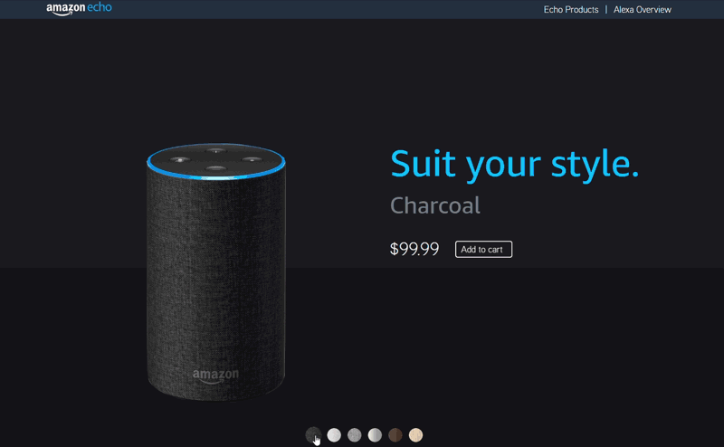

Amazon Echo Microsite
This newly designed micro-site provides a more user friendly way to learn about the Amazon Echo product line and provides an organized resource for existing Echo owners to learn more about what their Alexa enabled device is capable of.
Team
Willis Tiao, Sahar Abdizadeh, Son Tran
Duration
2 weeks
Role
Front End Dev, User Research, Design
Software
HTML/CSS, JavaScript, Invision, Illustrator, Photoshop
The Problem
The smart speaker has become a staple among households worldwide since it's inception in 2016. Whether these speakers are used for novelty or utilty, our research revealed that many smart speaker customers are unaware of what their AI enabled devices were fully capable of.
How can we help customers better understand what their smart speakers can do and find the best product to fit their needs?
Background
Amazon's declining growth rate in the smart speaker market
As pioneer of the smart speaker, Amazon has been met with rival products from other technology giants. We looked at the top competitors in the smart speaker market (Amazon Echo, Google Home, and Apple HomePod), researching respective sale statistics and the average smart speaker owner.
Although the Amazon Echo is the leading seller of smart speakers, Google Home and other competitors are growing at faster rates and projected to overtake the Amazon Echo in 2018. The introduction of new competition and increase in total market size means that Amazon needs to react in order to remain a viable competitor.
User Research
Verifying our defined problem and targeted users
Based on data from comScore, the average smart speaker owner is in their mid 30s in middle to upper class households. To verify this data and identify user pain points, we conducted interviews with both existing Amazon Echo users and individuals that did not currently have a smart speaker.
Interview Feedback
We were able to conduct 15 interviews with individuals ranging between 18 and 45 years old. Our aim was to gauge the level of awareness our interviewees had on Amazon smart speakers' different functions, and also gain insight on what resources they were using to learn more.
We found that while our interviewees had a basic awareness of Amazon Echo's different uses, they lacked a reliable resource to learn how to put these capabilities to use.
Solution
Defining objectives and ideating a viable solution
During a brainstorming session, the team pinpointed three main objectives:
- Simple Navigation
Navigation to and within site should be easy and intuitive.
- Digestible Information
Presented information should not overwhelm the user and should include visual aide.
- Consitent Brand Representation
Remain consistent with Amazon's style guidelines.
A microsite would maintain a fluid user flow within Amazon's webstore, while directing customers' attention towards Amazon's smart speaker products and information.
Design Process
Initial prototyping and wireframing
Before wireframing, we made rough sketches that helped us visualize the user flow and information architecture. We also reached out to an existing Amazon designers, who verified that our colors and typography were inline with Amazon's style guide.
As Amazon did not have icons for their Echo products, our team designed simple icons for the Echo 2 product line.
We wanted to include dialog representation of Alexa's other functions, giving users a broader scope of how they can apply these uses in their own homes.
The color picker gives the user a clear display of all options before adding their selection into their Amazon cart.
Next Steps